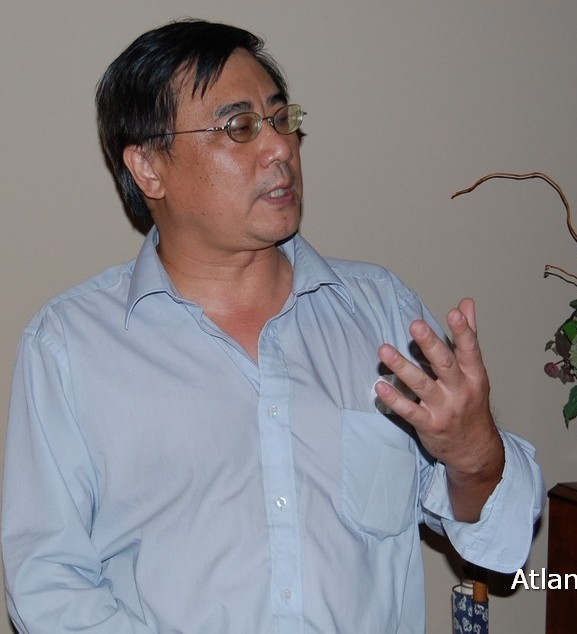

关键, 基金会创会董事
来自北京，在美多年。在基金会创建初期参与部分工作，为基金会作宣传报道。后因个人原因，离开基金会，但仍关心着基金会的发展。现在纽约附近定居，衷心希望基金会越做越好，让更多贫苦但优秀的孩子们得到帮助。
王叶辉
上世纪末来美，现在一家500强公司工作。从基金会初建就参与了基金会的工作，是基金会最早的28人之一。不管我们身在何处，能够为我们的孩子传递正能量尽一点儿微薄之力是我的荣耀，在我们力所能及的范围内，尽可能的多帮助一些需要帮助的孩子们是我们毕生的事业。很荣幸有缘结识了志同道合的朋友们，希望有更多的有识之士加入，燃起更多孩子心中的希望之光。
林黛，基金会八个创始人之一，担任基金会秘书长多年，主要负责撰写和组织宣传报道以扩大基金会的影响。
和同好一同创立基金会并为它的发展壮大做出贡献是很自豪的一件事，因为这是一个资助贫困孩子完成学业的基金会。为了孩子，一切的努力和付出都是值得的。
钟京, 基金会创会董事， 首任财务长， 董事任职 2009-2015，贫困儿童长期资助项目志愿者。
钟京感言： 虽不属贫困家庭出身，但深感命运之不公，对一些贫困，边远地区的孩子，尤其是女孩子，至今无缘完成基础教育深感痛心，愿和志同道合的朋友一起做一点实实在在的事情帮助他们。
Top